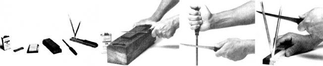

Here's the last of our three-part series on gettin' in the winter's meat without professional help.
For those who didn't see the last couple of issues of MOTHER (poor souls), allow us to set the scene by mentioning what you missed.
In issue 89, David Harper reviewed the basics of field-dressing and skinning big-game animals, such as deer and their kin, and noted that the same techniques could be put to good use when slaughtering midsize homestead livestock, such as goats and sheep. Then, in issue 90, David offered for your consideration his personal, bare-bones (literally) butchering technique... a method that may not produce the familiar, bone-in cuts of meat you're accustomed to seeing at the market, but nonetheless eliminates much of the time and work associated with more traditional approaches to meat cutting.
And here, as the third and final installment, is a look at some of the tools of the trade, with special emphasis on knives and the selection and use of various sharpening implements.
There are three types of hand tools generally associated with butchering: bone saw, cleaver, and knife. Let's take a look at each of them.
Bone saw: A bone saw resembles a hacksaw in that its most usual form is a band-type blade held in a hacksaw-type frame. Consequently, many a novice butcher assumes that the trusty ol' hacksaw hanging there on the workroom wall can double as a meat and bone cutter. Well, it can, but don't expect easy going. That's because a hacksaw has fine, shallow, closely spaced teeth that will clog up rapidly if used to cut meat and bone. A bone saw, on the other hand, has larger, deeper, wider teeth that will cut easily and quickly through flesh and bone, producing smooth, splinter-free results without clogging up.
The other significant difference between the two types of saws is in the size of the frames. While most hacksaw blades start at just under a foot in length, the most common length for a bone-saw blade is slightly over two feet. The extra size has several advantages, but price sure isn't one of them... in my area, a bone-saw frame with a 25-1/2" blade costs $50.
Fortunately, there's a way out: Most meat-packers will sell you a bone-saw blade for around $2. Buy a blade, take it home, punch out the pins in each end, use side cutters or a similar tool to cut the blade down to two hacksaw-length pieces, drill a hole in each end of each of the blades to accept the retaining pins on the hacksaw frame... and you now have a two-year supply (at least) of bone-saw blades.
As a last resort, if you can't find bone-saw blades in your area, purchase the coarsest-toothed hacksaw blade you can find, and make do.
Meat cleaver: Of the three basic butchering tools-bone saw, knife, and meat cleaver-the cleaver is the easiest to get along without. Although this wicked-looking tool has a variety of uses in the hands of a professional butcher, its primary function for a first-timer is chopping through such softer, smaller bones as ribs. The implement can be a worthwhile investment if you plan to do a lot of butchering-but don't feel that you must have one to get an occasional meat-cutting job done properly.
Knives: The way I learned which styles of knives were best for meat cutting was by experimentation: I gathered up every hunting, fishing, kitchen, and butcher knife I owned; borrowed as many more as I could from friends; and gave each of them an on-the-job audition. Try it! Assuming that all the blades you've gathered up are equally and sufficiently sharp, it won't take long to identify the sizes and designs best suited to your style of meat cutting.
For example, my personal butchering technique involves boning out the meat. That means I do a lot of precision cutting, much of it in tight spots that would cramp the style of a wide-bladed butcher knife. For doing that type of work, the best choice is a long, thin-spined, narrow-bladed design called (what else?) a boning knife. Such knives are similar in appearance to fish filleters and are available most anyplace that sells cutlery. My longtime personal favorite is a custom model that I ground to shape from a rusty old butcher knife I found at a garage sale, but any good filleting knife with a substantial handle (as opposed to the shapeless and skimpy grips so common to the cheaper versions) will do the trick.
Most professional-quality butcher knives are made of carbon steel, which is relatively soft a? steels go, will corrode if neglected, and is certain to darken and discolor. But for all those apparent flaws (none of which is actually a hindrance), I prefer carbon-steel blades because they sharpen easily, hold an edge well, and are less brittle than their stainless counterparts.
Carborundum is a trade name for a synthetic stone used to sharpen carbon-steel blades. Carborundum stones are inexpensive and come in a variety of sizes and grits. One handy configuration is a stone made of two thin pieces that are laminated to provide a coarse grit on one side and a finer sharpening surface on the other. While it's generally a good idea to use oil (or water, if no oil is available) when honing with a Carborundum stone, many users prefer to hone without the aid of a lubricant, at least when in the field.
The most popular natural sharpening stones are quarried near Hot Springs, Arkansas, and are generally named after their home state. Arkansas stones cost more than Carborundum but make up for it in their superiority when working with stainless steel and other superhardened metals. These natural stones come in a variety of sizes and grits, but the readily available two-stone kits (medium and fine grits) will answer most any stainless sharpening need from re-beveling a cutting edge to touch-up honing.
Unlike Carborundum, Arkansas stones require oil. The purpose of the slick stuff isn't so much to lubricate as it is to keep the stone clean and gritty by floating the microscopic metal shavings up and out of the stone's pores, where the sharpening movements of the knife blade will scrape them away. You can purchase specially formulated honing oil at sporting goods and cutlery outlets, but any light oil works well.
A third and relatively new class of sharpening tool is the Japanese waterstone. These brick-colored stones require water rather than oil as a honing lubricant, are easy to use, work well on both carbon and stainless steels, and cost far less than Arkansas stones of comparable size. The only real drawback is that they're messy to use. Also, many users claim that they must be stored in water, making them less than highly portable.
No matter what kind of steel your knives are made of or the type of stone you use to sharpen them, the most important part of the honing operation is attaining the correct bevel on the cutting edge. This is complicated by the fact that different "experts" recommend different angles (the norm being 20° or so).
A variety of techniques, formulas, and tricks (and lately, gadgets) are available to help you attain this elusive "best" bevel-but the most straightforward and workable approach I've found is simply to study the existing bevel before you begin sharpening, then check from time to time to see that your honing marks match up. If you don't like the way your knife's original edge cuts, you can alter it... but be careful, since sharpening the knife at too great an angle to the stone will produce a thick, blunt edge that doesn't cut well, while too low an angle will result in a thin, fragile edge that dulls and chips easily.
Never subject a fine knife to any sort of power sharpening tool-it's too easy to drastically alter the bevel edge, and the heat generated by such high-speed tools can rob steel of its temper.
[1] Apply a light coat of oil to a medium-grit stone.
[2] Place one side of the blade against the stone, lift the back of the blade slightly to achieve the proper bevel, then stroke forward (away from you) with a sweeping motion, as if trying to shave off a paper-thin slice of the stone. Make a few strokes on one side, then turn the knife over and make an equal number of strokes on the other side. A half-dozen strokes per side should do-depending on the hardness of the steel, the grit and condition of the stone, and the sharpness of the blade when you began.
[3] Switch to a fine-grit stone, apply a light coat of oil, and repeat step 2, using only enough strokes to hone the edge to hairsplitting sharpness.
[4] Remove any microscopic honing burrs with a few strokes against a butcher's steel, a ceramic rod, or a leather strop.
Above all, be safety-conscious. Always make your sharpening strokes away from you. Place your sharpening stone on a flat, stable surface rather than in your hand. And if you find that you have to hold the stone to keep it from sliding around, make certain your fingers are well below the top edge, to avoid an accident. After all, a self-inflicted wound is-to steal a few words from Shakespeare-"the most unkindest cut of all."
|
 STAFF PHOTOS [1] An array of sharpening equipment. Left to right: honing oil, a small Carborundum stone, an Arkansas stone in its cedar box, a Japanese waterstone with plastic platform, a butcher's steel, and a touch-up set including a small Arkansas stone and twin ceramic honing sticks. [2] An efficient honing technique is to stroke forward in an arcing motion, as if trying to shave a thin slice from the top of the stone. [3] Remove honing burrs by pulling the blade across a butcher's steel or [4] a ceramic stick. |
|
|